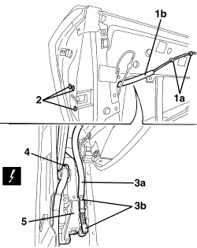

7005N20 FRONT SIDE DOOR LOCK MOTOR/CATCH ASSEMBLY, LEFT OR RIGHT - R.R WITH DOOR PANEL AND SUPPORT FRAME REMOVED
- Path
- Procedures > 70 FITTINGS > 7005 PASSENGER COMPARTMENT FRONT SIDE DOORS > 7005N FRONT DOOR CENTRAL LOCKING SYSTEM > 7005N20 FRONT SIDE DOOR LOCK MOTOR/CATCH ASSEMBLY, LEFT OR RIGHT - R.R WITH DOOR PANEL AND SUPPORT FRAME REMOVED
- Kind
- repair procedure (removal / refitting; the operation number is the code)
- Applies to
- all engines; all production periods
- Interactive page
- https://sloeber94.github.io/elrnDB-aBrrSpdr/en/#/946002532
Applies to: all engines; all production periods
 Removing
Removing
 Refitting
RefittingOp. 7005A04 FRONT SIDE DOOR WATER GUARD PROTECTION - R.R. OR POSITION WITH DOOR PANEL REMOVED
Op. 7005C17 FRONT SIDE DOOR LOCK BARREL - R.R.
Op. 7005E91 PARTITION ON ONE FRONT DOOR (LH OR RH) - R.R. WITH DOOR PANEL REMOVED
1. Disconnect the retainers (1a) for the rod (1b) connecting the interior handle with the lock.
2. Loosen the lock fixing bolts.
3. Disconnect the rod (3a) from the retainers (3b) for the lock.
4. Disconnect the electrical connection.
Description | Component |
|---|---|
LEFT FRONT DOOR LOCK GEARED MOTOR | |
RIGHT FRONT DOOR LOCK GEARED MOTOR |
5. Keep the lock complete with rod.

Applies to: all engines; all production periods
Refitting
Removing- Check that the lock is not damaged.
- Connect the electrical connection.
- Connect the rod to the lock retainers.
- Tighten the lock fixing bolts.
- Connect the retainers for the rod connecting the interior handle with the lock.
Op. 7005E91 PARTITION ON ONE FRONT DOOR (LH OR RH) - R.R. WITH DOOR PANEL REMOVED
Op. 7005C17 FRONT SIDE DOOR LOCK BARREL - R.R.
Op. 7005A04 FRONT SIDE DOOR WATER GUARD PROTECTION - R.R. OR POSITION WITH DOOR PANEL REMOVED
Topics linked from this page (5)
- 7005A04 FRONT SIDE DOOR WATER GUARD PROTECTION - R.R. OR POSITION WITH DOOR PANEL REMOVED
- 7005C17 FRONT SIDE DOOR LOCK BARREL - R.R.
- 7005E91 PARTITION ON ONE FRONT DOOR (LH OR RH) - R.R. WITH DOOR PANEL REMOVED
- N050 DRIVER'S FRONT DOOR LOCK GEARED MOTOR
- N051 RIGHT FRONT DOOR LOCK GEARED MOTOR
Topics that link to this page (13)
- A033 ALARM ACTIVATION ACOUSTIC SIGNAL IRREGULAR
- P030 NO DOORS / BOOT OPEN BUZZER SIGNAL WITH CAR IN MOTION
- 7005N21 FRONT SIDE DOOR LOCK MOTOR/LOCK ASSEMBLEY FOR ONE DOOR, LEFT OR RIGHT - R.R.
- E2510 COURTESY LIGHTS - WIRING DIAGRAM
- E2510 COURTESY LIGHTS - COMPONENT LOCATION
- E2521 PUDDLE LIGHTS - WIRING DIAGRAM
- E2521 PUDDLE LIGHTS - COMPONENT LOCATION
- E3040 CENTRAL LOCKING - WIRING DIAGRAM
- E3040 CENTRAL LOCKING - COMPONENT LOCATION
- E7015 ALARM - WIRING DIAGRAM
- E7015 ALARM - COMPONENT LOCATION
- E7015 ALARM - WIRING DIAGRAM
- E7015 ALARM - COMPONENT LOCATION